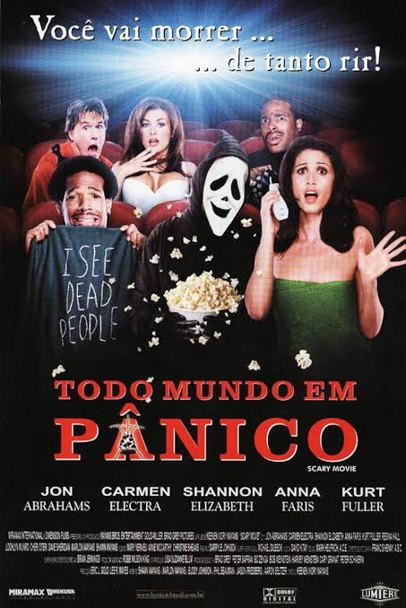

Ficha do filme
Pânico
Sinopse
Um novo assassino veste a máscara do Ghostface e transforma uma cidade em cenário de medo. Enquanto os sobreviventes tentam entender a ligação entre os ataques, ninguém está acima de suspeita.

Ficha do filme
Um novo assassino veste a máscara do Ghostface e transforma uma cidade em cenário de medo. Enquanto os sobreviventes tentam entender a ligação entre os ataques, ninguém está acima de suspeita.